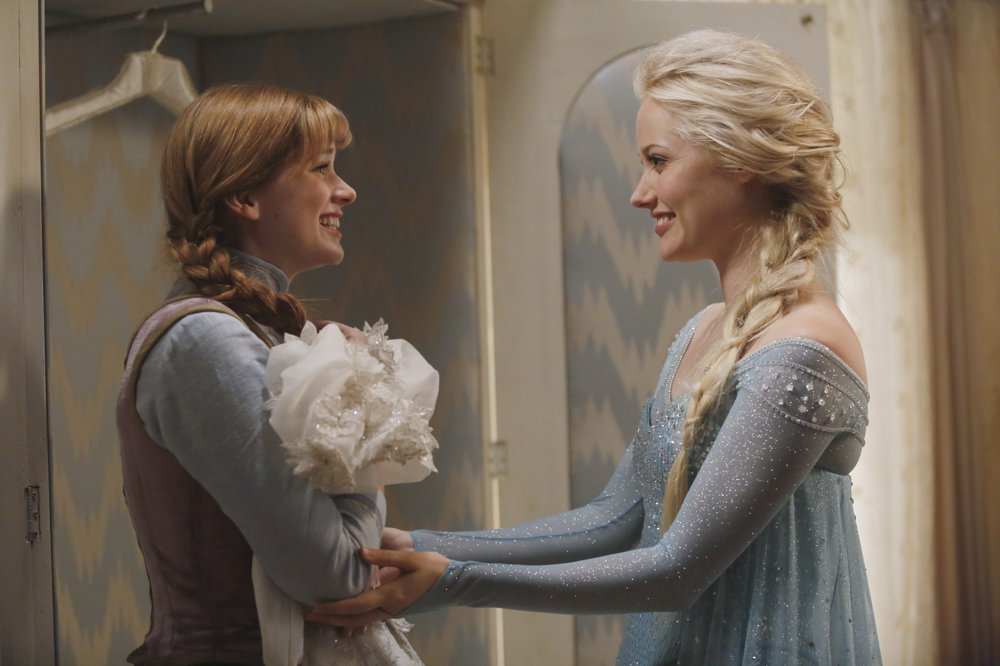
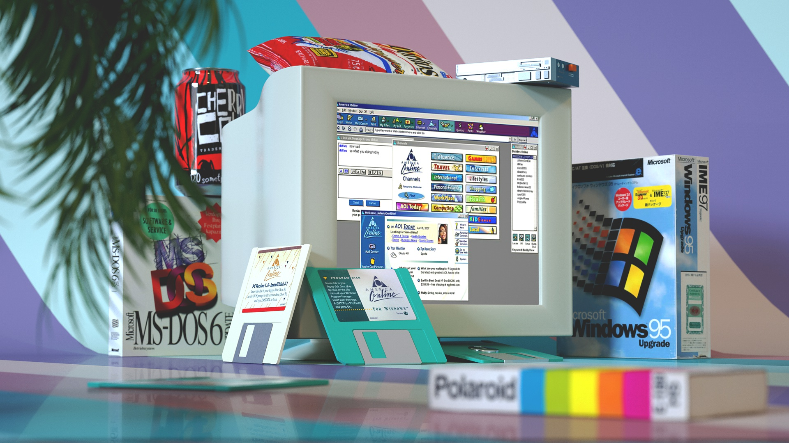

Mera's Page -----Criticas&
holitas soy meras el pro, cinefilo aficionado, dando opiniones humildes
ULTIMAS AÑADIDAS
Arrival
Arrival es una pelicula bastante interesante, intenta hacer algo diferente con el genero de alienigenas que llegan a la tierra y lo tipico de siempre. La pelicula empieza de forma peculiar y tiene un desarrollo fluido e entretenido, algo peculiar de esta pelicula es que en si no nos muestran a los aliens de forma explicita y cuando nos muestan una parte de ellos es bastante diferente a como estamos acostumbrados en el cine, la fotografia es bastante espetacular donde unas tomas bastante ricas, los actores hacen su trabajo con crecer en especial Amy Adams
Frozen
>FROZEN ES FROZEN, partiendo del boom que tuvo en su momento en la mayoria de niños, ya ha pasado tiempo y es hora de verla. La pelicula es entretenida parte del tiempo, tiene varrios numeros musicales que fueron una gran ayuda en la popularizacion de la pelicula dado la naturaleza de sus canciones, veanla si lo quieren hacer:]

La La Land
LA LA LAND es una de mis peliculas favoritas casi desde el momento en que la termine de ver, todo me maravillo de ella, los personajes, la historia, y sobre todo la musica, he visto mas que 2 veces la pelicula, al termianr de verla por primera vez, me dejo ese sentimiendo de final triste ya que todo termina, pero al verla la segunda vez como un año despues, no la senti triste si no bien correcta, te da a entender que no todo termina como deberia y asi es la vida y no por eso es una final triste 11/10
///PERSONAL///
Cine
Obviamente algo de mis gutos es el cine, desde siempre me ha gustado. Nada mas que decir
Tecnologia
La tecnologia es otro campo que sigo a diario en varios de sus ambitos ya sea de moviles o pc, hogar ect.. la verdad me fascina bastante, me la paso viendo review de diferentes aparatos solamente para saber, viva la cartulina
Musica
A quien no? la musica es algo que todos tenemos en comun ya sea el genero que gustes mas este arte es maravilloso, tambien soy la cara de Are Jadehmm, Yei
EL siguiente video es de una de mis canciones fav
